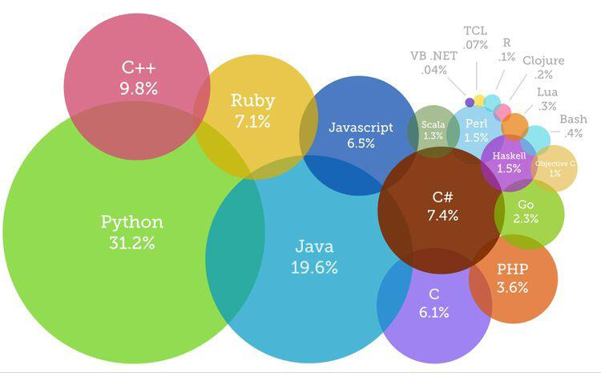

Programming Languages
Links:
Examples
Among the most important programming languages currently used: Java: It is a language dependent on the objects, which makes it relatively easy to apply, as the programmer does not have to repeat the programmatic statements for the same purpose, but only creates the object once, and then calls it whenever required, in addition to that there are many ready-made objects that the programmer can Using it, which is included in the libraries of programs that support Java programming, such as netbeans, and the Android language used to program many smart phones currently deployed is mainly Java language with some additions.
- #C:
It is an object-oriented language that depends on many patterns, and was adopted by Microsoft, the pioneer in developing computer operating systems to develop the dot net language
- PHP:
A new language that works on several environments like Windows and Linux.
- SQL:
A non-procedural language used to organize and control databases.
- Java Script:
It is a completely different language from the Java language, and it has no relationship with it, the aim of which is to create more interactive websites with the user, such as entering data on the site, or requesting specific data, and it is implemented in two parts, some of which are implemented on the user's device with the help of the browser, Including what requires returning to the server, the simplest example of which is the creation of an email, the information that is entered needs JavaScript.
